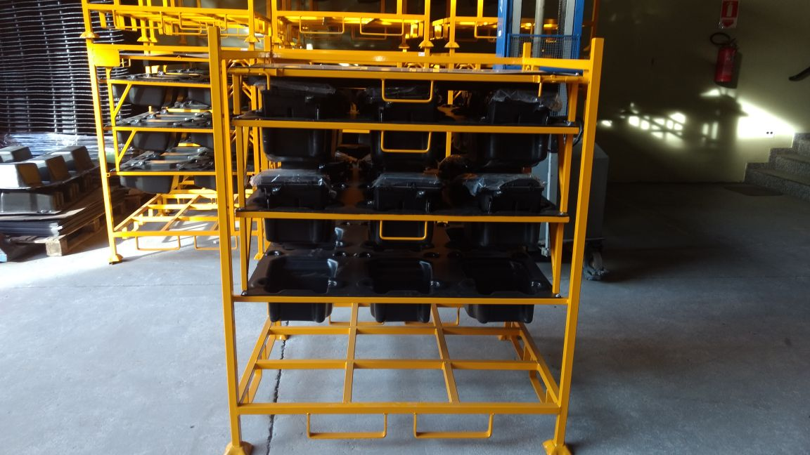
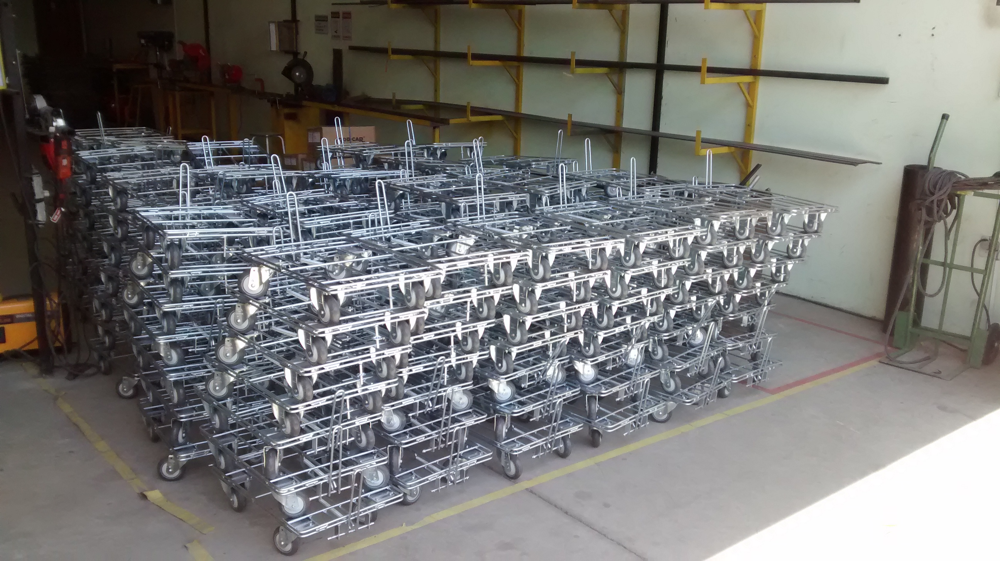

Tempo perdido
Equipamentos inadequados tornam o transporte interno mais lento e trabalhoso.
Soluções metálicas sob medida para sua logística industrial.
Racks, carrinhos de movimentação, bancadas e estruturas que ajudam sua indústria a produzir com mais agilidade, segurança e organização.
Conte o que sua indústria precisa e inicie seu atendimento pelo WhatsApp.

Uma logística mal estruturada custa tempo, espaço e produtividade. Movimentar uma peça parece simples — até que a estrutura inadequada comece a gerar gargalos.
Equipamentos inadequados tornam o transporte interno mais lento e trabalhoso.
Acondicionamento e movimentação inadequados deixam as peças mais expostas.
Estruturas genéricas comprometem a organização e o armazenamento.
A falta de padronização dificulta a segurança, a repetibilidade e o fluxo operacional.
Sua operação não deveria se adaptar a uma estrutura genérica.
A estrutura deve ser desenvolvida para o seu processo.
Da armazenagem ao abastecimento da linha, desenvolvemos soluções metálicas para acompanhar o fluxo da sua indústria.
Armazenagem, acondicionamento e transporte de componentes. Projetados considerando peça, carga, dimensões e utilização.
Proteção e organização
Mais praticidade no transporte de materiais entre áreas. Soluções pensadas para dar agilidade ao fluxo interno.
Movimentação e abastecimentoEstruturas em aço para produção, montagem e manutenção, desenvolvidas conforme a rotina do posto de trabalho.
Projetos especiais para componentes e operações que exigem mais do que uma solução padronizada.
Atendimento também para equipamentos que já fazem parte da sua operação.
Estruturas que fazem a logística trabalhar a favor da produção.
Quando equipamentos e estruturas acompanham o processo, toda a operação pode ganhar mais previsibilidade.
Transporte mais prático entre áreas e menos movimentações desnecessárias.
Estruturas adequadas ajudam a proteger componentes, equipamentos e colaboradores.
Armazenamento padronizado e materiais no lugar certo para apoiar a produtividade.
Um componente pesado exige uma solução. Uma peça delicada exige outra. Uma linha de montagem tem necessidades diferentes de uma área de expedição.
Não adaptamos apenas aço.
Desenvolvemos a estrutura para funcionar dentro do processo.
Um processo de desenvolvimento que conecta as exigências da operação à fabricação.
Conhecemos o componente, o processo e o objetivo da sua operação.
Definimos a solução: rack, carrinho, bancada ou projeto especial.
Consideramos dimensões, utilização, resistência e características específicas.
Quando necessário, uma unidade pode ser avaliada antes da fabricação em série.
Refinamos o projeto conforme os resultados da validação.
Após aprovação, seguimos para produção conforme a demanda da empresa.
A Estrutálica é especializada em movimentação e armazenagem de componentes automotivos. Conhecimento aplicado para apoiar a produtividade e preservar a integridade das peças.
Soluções feitas para acompanhar
o ritmo da indústria.
No mesmo projeto, uma visão completa das necessidades da sua empresa.
Projetos desenvolvidos conforme a necessidade de cada empresa.
Estruturas para ambientes que exigem resistência e confiabilidade.
Experiência aplicada à movimentação e proteção de componentes.
Racks, carrinhos e estruturas especiais, com atendimento também para equipamentos em operação.
Não sabe exatamente qual estrutura precisa? Você não precisa chegar com toda a solução pronta.
Conversar sobre minha operaçãoApresente a necessidade. Nossa equipe pode analisar a aplicação e entender qual solução faz mais sentido.
O desenvolvimento sob medida considera o componente, o processo e o posto de trabalho.
Também desenvolvemos carrinhos e outras soluções logísticas, além de oferecer manutenção de racks e carrinhos.
Após desenvolvimento e validação, o projeto pode seguir para produção conforme sua necessidade.
Temos forte especialização no setor automotivo, mas nossas soluções de movimentação, armazenagem e estruturas metálicas podem atender outras aplicações industriais. Conte sua necessidade para avaliarmos a aplicação.
Racks industriais, carrinhos de movimentação, bancadas e estruturas metálicas sob medida, além de manutenção de racks e carrinhos.
Sim. O desenvolvimento pode considerar as características da peça, dimensões, capacidade, utilização e fluxo operacional.
Sim. Fotos, medidas e informações sobre o processo ajudam a equipe a compreender melhor a necessidade inicial. Você pode enviá-las na conversa pelo WhatsApp.
Dependendo da solução, o desenvolvimento pode envolver prototipagem e validação antes da fabricação em escala.
Sim. O portfólio inclui manutenção de racks e carrinhos industriais. Fale com a equipe para avaliar seus equipamentos.
Racks. Carrinhos. Bancadas.
Estruturas sob medida.
Tudo começa entendendo
o que sua operação precisa.